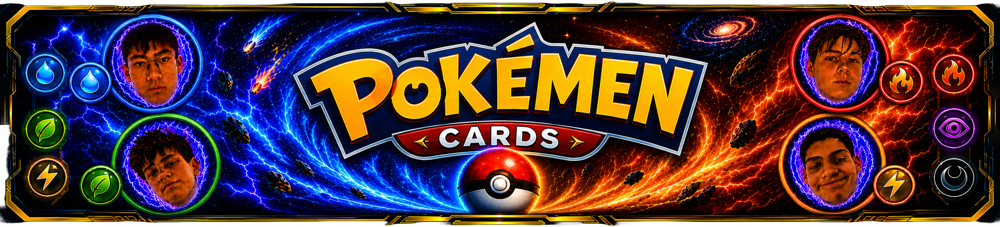

About Pokémen
Our Vision
Pokémen is a richly imagined universe centered on discovery, strategy, and inventive design. Built to reward curiosity and thoughtful play, Pokémen challenges traditional ideas of capture and interaction by emphasizing adaptability, elegance, and intelligent systems. Every element of the world is crafted to encourage meaningful engagement—where success comes not from force alone, but from understanding, timing, and creativity.
Founding Team
Pokémen was founded by Riley Olsen, alongside co-founders Issac Yu, Kian Ramezani, and Luka Smabridge.
The founding team brings together diverse perspectives and complementary strengths, blending technical precision with bold creative thinking. This collaboration defines Pokémen’s identity and drives its long-term vision.
The Pokémen World
The world of Pokémen is dynamic and alive. Environments respond to player behavior, encounters are intentional, and each Pokémen exhibits unique traits, movement patterns, and behaviors. Trainers are encouraged to observe closely, adapt quickly, and engage thoughtfully—turning every interaction into a purposeful experience.
Capture Technology: Floppy Richards
At the core of Pokémen’s innovation is its signature capture system. Pokémen are captured using Floppy Richards, a breakthrough in capture device design that embodies the brand’s philosophy of flexible power.
Floppy Richard is a high-performance Pokémen capture device engineered in an elegant, spring-like form made from precision-folded paper. When activated, it extends with controlled flexibility to encircle and secure Pokémen efficiently.
Lightweight yet remarkably durable, Floppy Richard adapts to movement and resistance in real time. Its paper-based construction is intentional—prioritizing responsiveness, portability, and a refined tactile experience. It stands as proof that strength does not require rigidity, and that sophistication can move.
Design Philosophy
Pokémen is guided by a simple principle: adaptability is power. From world design to capture mechanics, every system rewards flexibility, observation, and creative problem-solving. Minimalist aesthetics are paired with deep mechanical depth, creating an experience that is easy to approach and rewarding to master.
The Pokémen Experience
Pokémen invites trainers into a universe where imagination meets precision. Whether discovering new Pokémen, refining advanced capture techniques, or exploring evolving environments, the experience is designed to grow alongside the player.
With Floppy Richard in hand and curiosity as your guide, Pokémen offers a world defined by innovation, elegance, and possibility.